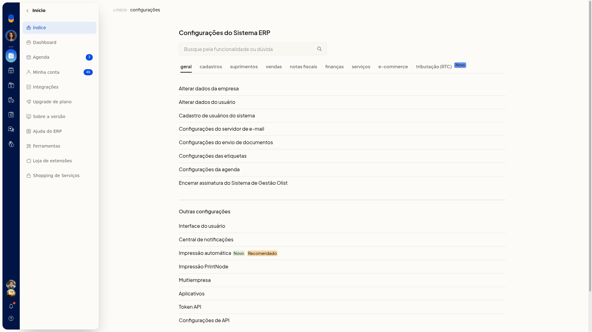
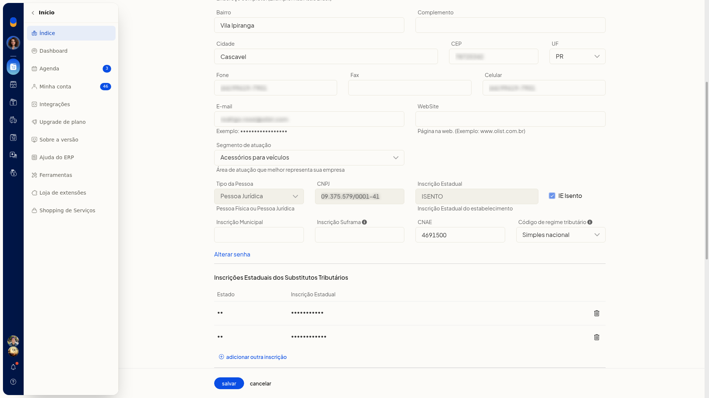

Enviar ou remover o logotipo da empresa
No ERP da Olist, o logotipo da empresa é exibido em notas fiscais, pedidos e propostas. Nesta tela você envia uma imagem de até 2Mb ou remove o logotipo já cadastrado.
O envio e a remoção ficam em Configurações > Configurações do Sistema ERP > Geral > Alterar dados da empresa, na seção Logo da empresa.
Pré-requisitos
- A tela não fica disponível para empresas no plano Conta Digital.
- Se a opção não aparecer para você, peça acesso ao administrador da conta.
Importante
- O arquivo do logotipo não deve ultrapassar 2Mb.
- O envio só é gravado ao clicar em Salvar. Voltar sai sem gravar.
- A remoção pede confirmação e, se confirmada, exclui o logotipo de forma persistente.
Instruções
Para enviar o logotipo:
-
Acesse Configurações > Configurações do Sistema ERP.
-
Na aba Geral, clique em Alterar dados da empresa.

-
Em Logo da empresa, clique em procurar arquivo e selecione a imagem.


-
Clique em Salvar para gravar o logotipo. Ele passa a ser exibido em notas fiscais, pedidos e propostas.

Para remover o logotipo:
- Acesse Configurações > Configurações do Sistema ERP.
- Na aba Geral, clique em Alterar dados da empresa.
- Em Logo da empresa, clique em remover logo.
- Confirme Deseja remover o logotipo da empresa?. O logotipo é excluído de forma persistente.
Resultado
O logotipo enviado fica disponível para notas fiscais, pedidos e propostas. O logotipo removido deixa de ser exibido nesses documentos.